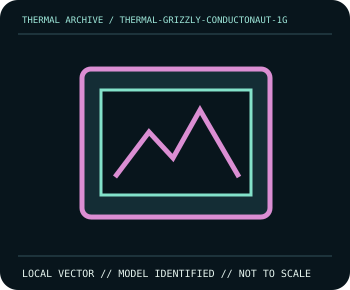

[ INDIVIDUAL COMPONENT // COOLING ]
Thermal Grizzly Conductonaut (1 g)
1 g gallium-alloy liquid metal; 73 W/m·K, 10–140°C maker ratings.

IDENTIFICATION: Match complete model, suffix, revision and bundle before installation. Related variants can differ in dimensions, brackets, wiring, connector, and operating limits.
Manufacturer specifications
| Catalog subcategory | Thermal Accessories |
|---|---|
| Exact model | Thermal Grizzly Conductonaut (1 g) |
| Published specifications | 1 g gallium-alloy liquid metal; 73 W/m·K, 10–140°C maker ratings. |
| Compatibility and mounting | Use only on compatible copper/nickel; never aluminum. Requires spill containment. |
| Connector and electrical limitations | Electrically conductive; isolate from PCB/SMDs and aluminum; no power until checked. |
Safe installation and maintenance
Power off, use ESD-safe work and apply sparingly. Liquid metal conducts electricity and attacks aluminum; isolate PCB parts, avoid skin/eye exposure, and follow its SDS. Never power until spill containment is checked.
- Follow the exact manufacturer manual for this model and host; do not interchange similar-looking parts or hardware.
- After service, verify pump/fan operation and temperature behavior under monitored conditions before normal workload.
Manufacturer source
- thermal-grizzly.com — Thermal Grizzly Conductonaut (1 g) product informationManufacturer specifications; verify current revision-specific manual and compatibility details before installation.
This static catalog entry is an identification aid, not a compatibility guarantee; ratings can vary by revision or SKU.